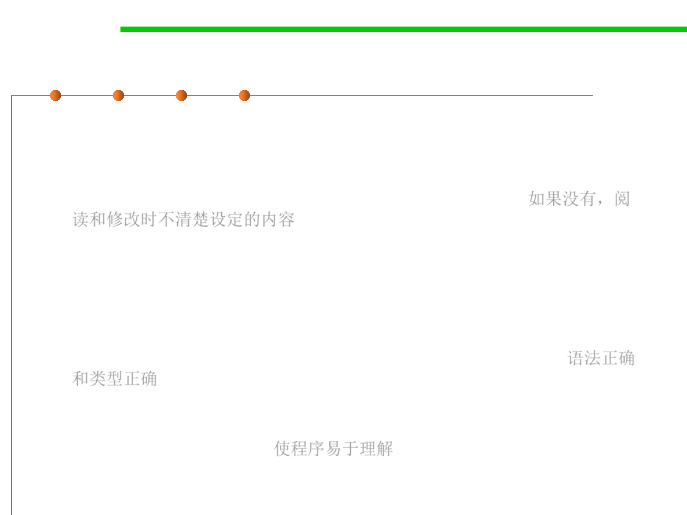

Programming for communication
3.2 Designing Specification
▪ Why do we need to write down our assumptions?
– Because programming is full of them, and if we don’t write them down,
we won’t remember them, and other people who need to read or change
our programs later won’t know them. They’ll have to guess.如果没有，阅
读和修改时不清楚设定的内容
▪ Programs have to be written with two goals in mind:
– Communicating with the computer. First persuading the compiler that
your program is sensible – syntactically correct and type-correct. Then
getting the logic right so that it gives the right results at runtime. 语法正确
和类型正确
– Communicating with other people. Making the program easy to
understand, so that when somebody has to fix it, improve it, or adapt it in
the future, they can do so. 使程序易于理解